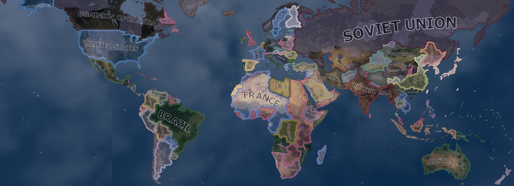
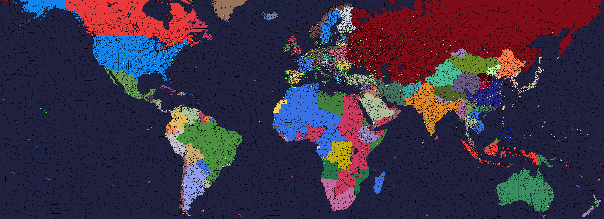

| 西欧 |
|
| 东欧 |
| 西欧 |
|
| 东欧 |
| 苏联 |
|
原页面：Countries
国家是《钢铁雄心 4》中的行为主体。每一个都由玩家或 AI 控制，在游戏中推进自己的国策树，并选择各种政治理念、参与外交、建造、科研、生产，以及对其军事部队的指挥。游戏中共有 344 个国家（不含可成立国家），其中 99 个出现在 1936 年开局。
每个国家都属于四种政治意识形态之一，这一归属可在游戏过程中改变，不过在大多数情况下，不通过模组制作无法提升「不结盟」意识形态。
《钢铁雄心 IV》中的国家要么是主要国家，要么是小国。在战争中，一个阵营只有在所有参战的主要国家都投降时才会投降。每个阵营中的主要国家会在战争总览界面中以国旗周围的金色边框标示。至少 3[1]个主要国家参与的战争被视为大规模战争，可解锁某些条件修正。
主要国家还会获得以下额外好处：
对处于战争状态的主要国家制造战争目标可获折扣，[2]并且各种来源产生的世界紧张度会根据工厂总数第二名的[3]主要国家有多强大而缩放。AI 对主要国家的态度也不同，更愿意对它们实施禁运[4]，并且更不愿意接受它们的条件投降。[5]
1936 年的主要国家有：
随着游戏推进，更多国家可以成为主要国家。
所有领导阵营的国家会立即被认定为主要国家。
否则，一个国家是否被视为主要国家取决于其工厂数量。如果一个国家至少拥有 35[6]个工厂，并且要么按工厂数量排在前 7[7]名，要么拥有前 7[8]名国家平均工厂数量的 70%[7]以上，它就会被视为主要国家。
哪些国家应算作主要国家每月评估一次。如果一个国家处于战争状态，这一每月检查不会导致该国失去主要国家地位。成为阵营领袖会绕过这一限制，使该国立即成为主要国家。


包含更多历史和细节的电子表格可在此处找到 forum:1674953。
注释：
| 国家 | Tag | 备注 | |||||||||||||||||||||
|---|---|---|---|---|---|---|---|---|---|---|---|---|---|---|---|---|---|---|---|---|---|---|---|
| AFG | 7 | 2 | 6.61M | 0 | 12 | 16 | 2 | 0 | 2 | 4 | 0 | 0 | 0 | 3 | 4 | 12 | 0 | 19 | 0 | 0 | |||
| ALB | 3 | 2 | 1.00M | 0 | 15 | 7 | 1 | 0 | 2 | 3 | 4 | 2 | 0 | 0 | 0 | 2 | 1 | 9 | 3 | 6 | 向 | ||
| ARG | 14 | 2 | 16.89M | 0 | 56 | 34 | 3 | 1 | 11 | 15 | 19 | 0 | 3 | 35 | 6 | 0 | 2 | 65 | 6 | 12 | |||
| AFA | 1 | 2 | 0.56M | 0 | 2 | 2 | 1 | 0 | 0 | 1 | 0 | 0 | 0 | 0 | 0 | 0 | 0 | 0 | 0 | 0 | 可用建筑位因州修正而减少。[注 2] | ||
| AST | 20 | 3 | 6.76M | 931.82K | 142 | 41 | 4 | 2 | 11 | 17 | 0 | 0 | 0 | 26 | 22 | 4 | 19 | 71 | 16 | 37 | 英国 | ||
| AUS | 6 | 3 | 6.43M | 0 | 69 | 27 | 3 | 0 | 10 | 13 | 2 | 2 | 0 | 0 | 30 | 0 | 5 | 39 | 9 | 0 | |||
| COG | 8 | 2 | 7.61M | 3.86M | 19 | 9 | 0 | 0 | 1 | 1 | 0 | 0 | 11 | 5 | 0 | 0 | 6 | 22 | 0 | 1 | 比利时 | ||
| BEL | 12 | 3 | 8.13M | 0 | 86 | 32 | 6 | 0 | 11 | 17 | 0 | 0 | 0 | 0 | 35 | 0 | 14 | 49 | 4 | 11 | 未启用《诸神黄昏》时开局拥有刚果。 | ||
| BHU | 1 | 2 | 0.45M | 0 | 3 | 4 | 1 | 0 | 2 | 3 | 0 | 0 | 0 | 2 | 0 | 0 | 0 | 2 | 0 | 0 | |||
| BOL | 2 | 2 | 2.38M | 0 | 27 | 7 | 1 | 0 | 6 | 7 | 0 | 0 | 0 | 60 | 2 | 0 | 0 | 62 | 2 | 0 | |||
| BRA | 31 | 2 | 44.02M | 0 | 80 | 61 | 3 | 2 | 17 | 22 | 0 | 13 | 27 | 3 | 4 | 6 | 9 | 62 | 12 | 24 | |||
| BRM | 9 | 2 | 8.63M | 0 | 27 | 24 | 1 | 0 | 3 | 4 | 56 | 0 | 3 | 212 | 0 | 0 | 4 | 275 | 1 | 2 | 英国 | ||
| MAL | 10 | 3 | 4.76M | 0 | 27 | 32 | 1 | 1 | 3 | 5 | 14 | 10 | 482 | 160 | 10 | 0 | 3 | 679 | 1 | 14 | 英国 | ||
| RAJ | 36 | 2 | 251.18M | 92.73M | 220 | 100 | 2 | 1 | 13 | 16 | 14 | 1 | 21 | 75 | 66 | 45 | 26 | 248 | 13 | 21 | 英国 | ||
| BUL BUZ BUF |
4 | 3 | 6.08M | 0 | 49 | 17 | 3 | 0 | 11 | 14 | 0 | 2 | 0 | 0 | 0 | 1 | 3 | 6 | 5 | 4 | 在没有 | ||
| CAN | 23 | 3 | 10.22M | 0 | 89 | 44 | 5 | 1 | 13 | 19 | 1 | 23 | 0 | 0 | 8 | 0 | 18 | 50 | 14 | 20 | 英国 | ||
| CHL | 8 | 2 | 5.06M | 0 | 50 | 25 | 2 | 4 | 8 | 14 | 3 | 1 | 0 | 64 | 38 | 4 | 5 | 115 | 5 | 13 | |||
| CHI | 22 | 2 | 210.86M | 0 | 92 | 73 | 8 | 2 | 11 | 21 | 0 | 0 | 0 | 21 | 11 | 0 | 3 | 35 | 11 | 23 | 在没有 | ||
| PRC | 1 | 2 | 2.33M | 0 | 2 | 8 | 1 | 0 | 1 | 2 | 0 | 0 | 0 | 3 | 3 | 0 | 24 | 30 | 0 | 0 | 在没有延安时同样以(1032) | ||
| COL | 3 | 2 | 8.00M | 0 | 16 | 11 | 1 | 0 | 7 | 8 | 15 | 0 | 0 | 0 | 0 | 0 | 6 | 21 | 6 | 6 | |||
| COS | 1 | 2 | 0.50M | 0 | 3 | 4 | 1 | 0 | 2 | 3 | 0 | 0 | 0 | 0 | 0 | 1 | 0 | 1 | 1 | 1 | |||
| CUB | 1 | 2 | 3.61M | 0 | 6 | 4 | 1 | 0 | 3 | 4 | 0 | 0 | 0 | 0 | 3 | 90 | 0 | 93 | 1 | 4 | |||
| CZE | 10 | 3 | 15.04M | 0 | 106 | 40 | 9 | 0 | 16 | 25 | 2 | 0 | 0 | 1 | 28 | 3 | 27 | 61 | 13 | 0 | 可用资源因州修正而减少。[注 7] | ||
| DEN | 7 | 3 | 3.75M | 0 | 39 | 18 | 2 | 4 | 8 | 14 | 0 | 10 | 0 | 0 | 0 | 0 | 1 | 11 | 8 | 19 | |||
| DOM | 1 | 2 | 1.25M | 0 | 6 | 4 | 1 | 0 | 3 | 4 | 0 | 0 | 0 | 0 | 0 | 1 | 0 | 1 | 1 | 2 | |||
| INS | 21 | 2 | 48.53M | 14.26M | 138 | 46 | 3 | 1 | 7 | 11 | 141 | 4 | 297 | 0 | 7 | 0 | 22 | 471 | 6 | 29 | 荷兰 | ||
| ECU | 3 | 2 | 2.08M | 0 | 20 | 8 | 1 | 0 | 5 | 6 | 2 | 0 | 0 | 0 | 0 | 0 | 0 | 2 | 2 | 5 | |||
| ELS | 1 | 2 | 1.43M | 0 | 3 | 4 | 1 | 0 | 2 | 3 | 0 | 0 | 0 | 0 | 0 | 1 | 0 | 1 | 1 | 1 | |||
| EST | 5 | 3 | 1.10M | 0 | 11 | 13 | 2 | 0 | 4 | 6 | 0 | 0 | 0 | 0 | 2 | 0 | 0 | 2 | 2 | 4 | |||
| ETH | 10 | 2 | 9.91M | 0 | 32 | 15 | 2 | 0 | 2 | 4 | 0 | 0 | 5 | 0 | 0 | 0 | 0 | 5 | 2 | 0 | 可用建筑位因州修正而减少。[注 2] | ||
| FIN | 13 | 3 | 3.81M | 0 | 59 | 30 | 3 | 1 | 7 | 11 | 0 | 0 | 0 | 0 | 10 | 2 | 0 | 12 | 5 | 11 | |||
| FRA VIC |
75 | 3 | 42.25M | 66.81M | 396 | 205 | 8 | 11 | 35 | 54 | 0 | 209 | 60 | 27 | 327 | 108 | 53 | 784 | 102 | 111 | |||
| GSM | 2 | 2 | 1.56M | 0 | 2 | 1 | 0 | 0 | 0 | 0 | 0 | 0 | 0 | 0 | 0 | 0 | 0 | 0 | 0 | 0 | 需要 | ||
| GER | 24 | 4 | 65.59M | 0 | 320 | 170 | 28 | 10 | 35 | 73 | 2 | 87 | 0 | 3 | 160 | 3 | 148 | 403 | 47 | 34 | |||
| GRE | 7 | 3 | 6.27M | 0 | 55 | 23 | 2 | 2 | 7 | 11 | 0 | 30 | 0 | 10 | 17 | 44 | 1 | 102 | 11 | 22 | |||
| GDC | 4 | 2 | 38.20M | 0 | 19 | 18 | 2 | 0 | 4 | 6 | 0 | 0 | 0 | 23 | 30 | 6 | 0 | 59 | 5 | 9 | 需要 | ||
| GXC | 2 | 2 | 11.97M | 0 | 17 | 8 | 1 | 0 | 3 | 4 | 0 | 0 | 0 | 26 | 23 | 6 | 0 | 55 | 2 | 0 | 在没有 | ||
| GUA | 1 | 2 | 1.77M | 0 | 3 | 4 | 1 | 0 | 2 | 3 | 0 | 0 | 0 | 0 | 0 | 4 | 0 | 4 | 1 | 2 | |||
| HAI | 1 | 2 | 2.38M | 0 | 5 | 4 | 1 | 0 | 2 | 3 | 0 | 0 | 0 | 0 | 0 | 2 | 0 | 2 | 1 | 3 | |||
| HBC | 3 | 2 | 28.48M | 0 | 29 | 13 | 0 | 0 | 2 | 2 | 0 | 0 | 0 | 0 | 0 | 0 | 5 | 5 | 3 | 2 | 需要 | ||
| HON | 1 | 2 | 0.86M | 0 | 3 | 4 | 1 | 0 | 2 | 3 | 0 | 0 | 0 | 0 | 0 | 1 | 0 | 1 | 1 | 2 | |||
| HUN | 5 | 3 | 8.69M | 0 | 43 | 29 | 7 | 0 | 10 | 17 | 1 | 100 | 0 | 0 | 6 | 0 | 7 | 114 | 9 | 0 | |||
| ICE | 1 | 2 | 0.12M | 0 | 1 | 2 | 0 | 1 | 1 | 2 | 0 | 0 | 0 | 0 | 0 | 0 | 0 | 0 | 0 | 1 | 丹麦 | ||
| PER | 17 | 2 | 12.60M | 0 | 60 | 36 | 3 | 0 | 4 | 7 | 50 | 2 | 0 | 2 | 12 | 12 | 0 | 78 | 3 | 7 | |||
| IRQ | 5 | 2 | 3.91M | 0 | 33 | 14 | 2 | 0 | 2 | 4 | 26 | 7 | 0 | 0 | 4 | 0 | 0 | 37 | 4 | 1 | 向 | ||
| IRE | 3 | 3 | 2.96M | 0 | 22 | 14 | 1 | 0 | 8 | 9 | 0 | 0 | 0 | 0 | 2 | 0 | 2 | 4 | 3 | 6 | |||
| ITA RSI RDS |
29 | 4 | 41.74M | 3.26M | 226 | 110 | 20 | 15 | 21 | 56 | 0 | 60 | 0 | 1 | 62 | 2 | 4 | 129 | 72 | 122 | |||
| JAP | 31 | 4 | 69.92M | 37.02M | 411 | 116 | 16 | 15 | 26 | 57 | 9 | 9 | 1 | 36 | 78 | 52 | 48 | 233 | 42 | 101 | |||
| KHM | 3 | 2 | 0.48M | 0 | 5 | 0 | 0 | 0 | 0 | 0 | 0 | 0 | 0 | 0 | 0 | 0 | 0 | 0 | 0 | 0 | 需要 | ||
| KUW | 1 | 2 | 0.08M | 0 | 1 | 2 | 0 | 0 | 0 | 0 | 0 | 0 | 0 | 0 | 0 | 0 | 0 | 0 | 0 | 4 | 英国 | ||
| LAT | 5 | 3 | 1.96M | 0 | 18 | 18 | 3 | 1 | 7 | 11 | 0 | 0 | 0 | 0 | 2 | 0 | 0 | 2 | 9 | 4 | |||
| LEB | 1 | 2 | 1.10M | 0 | 5 | 4 | 0 | 0 | 1 | 1 | 0 | 0 | 0 | 0 | 0 | 0 | 0 | 0 | 5 | 3 | 法国 | ||
| LIB | 1 | 2 | 0.75M | 0 | 3 | 2 | 1 | 0 | 1 | 2 | 0 | 0 | 6 | 0 | 0 | 0 | 0 | 6 | 0 | 2 | |||
| LIT | 5 | 3 | 2.20M | 0 | 15 | 18 | 2 | 0 | 5 | 7 | 0 | 0 | 0 | 0 | 2 | 0 | 0 | 2 | 4 | 2 | |||
| LUX | 1 | 2 | 0.30M | 0 | 5 | 4 | 1 | 0 | 3 | 4 | 0 | 0 | 0 | 0 | 14 | 0 | 0 | 14 | 0 | 0 | |||
| MAN | 7 | 2 | 34.38M | 0 | 19 | 16 | 3 | 0 | 2 | 5 | 4 | 7 | 0 | 4 | 27 | 4 | 12 | 58 | 5 | 3 | 日本 | ||
| MEN | 3 | 2 | 2.04M | 0 | 5 | 4 | 1 | 0 | 2 | 3 | 0 | 0 | 0 | 0 | 0 | 0 | 4 | 4 | 0 | 0 | 1939 年为 | ||
| MEX | 13 | 2 | 16.42M | 0 | 162 | 39 | 3 | 2 | 8 | 13 | 34 | 0 | 0 | 8 | 10 | 0 | 4 | 56 | 9 | 22 | 向 | ||
| MON | 5 | 2 | 0.77M | 0 | 17 | 8 | 1 | 0 | 3 | 4 | 0 | 0 | 0 | 0 | 2 | 3 | 0 | 5 | 1 | 0 | |||
| OMA | 4 | 2 | 0.49M | 0.13M | 5 | 5 | 1 | 0 | 1 | 2 | 4 | 0 | 0 | 0 | 0 | 0 | 0 | 4 | 0 | 5 | 英国 | ||
| NEP | 1 | 2 | 5.58M | 0 | 3 | 4 | 1 | 0 | 2 | 3 | 0 | 0 | 0 | 0 | 0 | 2 | 0 | 2 | 0 | 0 | |||
| HOL | 5 | 3 | 7.94M | 0.23M | 91 | 26 | 4 | 3 | 11 | 18 | 35 | 60 | 0 | 0 | 4 | 0 | 12 | 111 | 5 | 20 | |||
| NZL | 6 | 2 | 1.49M | 113.35K | 28 | 19 | 1 | 0 | 4 | 5 | 0 | 0 | 0 | 4 | 0 | 0 | 4 | 8 | 4 | 7 | 英国 | ||
| NIC | 1 | 2 | 0.68M | 0 | 4 | 4 | 1 | 0 | 2 | 3 | 0 | 0 | 0 | 0 | 0 | 1 | 0 | 1 | 1 | 1 | |||
| NXM | 3 | 2 | 2.63M | 0 | 6 | 3 | 1 | 0 | 0 | 1 | 0 | 0 | 0 | 1 | 0 | 0 | 2 | 3 | 0 | 0 | 需要 | ||
| XIC | 3 | 2 | 16.39M | 0 | 8 | 10 | 2 | 0 | 3 | 5 | 0 | 0 | 0 | 1 | 2 | 0 | 0 | 3 | 0 | 0 | 需要 | ||
| NOR | 11 | 3 | 3.09M | 0 | 45 | 26 | 2 | 2 | 7 | 11 | 0 | 20 | 0 | 15 | 9 | 1 | 0 | 45 | 7 | 25 | |||
| PAL | 1 | 2 | 0.93M | 0 | 5 | 2 | 0 | 0 | 1 | 1 | 0 | 0 | 0 | 0 | 0 | 0 | 0 | 0 | 2 | 3 | 英国 | ||
| PAN | 1 | 2 | 0.47M | 0 | 6 | 4 | 1 | 0 | 2 | 3 | 1 | 0 | 0 | 0 | 0 | 0 | 0 | 1 | 1 | 5 | |||
| PAR | 2 | 2 | 0.94M | 0 | 18 | 5 | 1 | 0 | 3 | 4 | 0 | 0 | 0 | 3 | 2 | 0 | 0 | 5 | 1 | 0 | |||
| PRU | 5 | 2 | 6.21M | 0 | 28 | 15 | 1 | 0 | 8 | 9 | 14 | 0 | 0 | 8 | 0 | 0 | 4 | 26 | 4 | 7 | |||
| PHI | 10 | 2 | 3.29M | 0 | 30 | 30 | 1 | 1 | 5 | 7 | 0 | 0 | 1 | 0 | 7 | 23 | 3 | 34 | 9 | 13 | 美国 | ||
| POL | 18 | 3 | 31.97M | 0 | 134 | 78 | 11 | 3 | 18 | 32 | 3 | 7 | 0 | 0 | 32 | 0 | 34 | 76 | 34 | 6 | 可用工厂因州修正而减少。[注 11] | ||
| POR | 20 | 2 | 6.80M | 7.72M | 59 | 34 | 2 | 3 | 12 | 17 | 0 | 0 | 2 | 127 | 0 | 20 | 3 | 152 | 6 | 28 | 未启用《抵抗运动》时开局拥有 3 个科研槽。 | ||
（西北三马） |
XSM | 3 | 2 | 2.59M | 0 | 13 | 5 | 1 | 0 | 4 | 5 | 0 | 0 | 0 | 0 | 0 | 0 | 0 | 0 | 0 | 0 | 若不启用 | |
| ROM | 12 | 3 | 18.07M | 0 | 48 | 40 | 7 | 2 | 11 | 20 | 44 | 4 | 0 | 0 | 3 | 0 | 5 | 56 | 7 | 12 | |||
| SAU | 9 | 2 | 2.96M | 0 | 14 | 10 | 2 | 0 | 1 | 3 | 3 | 0 | 0 | 0 | 0 | 0 | 0 | 3 | 0 | 11 | |||
| SND | 2 | 2 | 38.42M | 0 | 9 | 4 | 0 | 0 | 1 | 1 | 0 | 8 | 0 | 0 | 0 | 0 | 0 | 8 | 3 | 3 | 需要 | ||
| SHX | 3 | 2 | 13.70M | 0 | 11 | 6 | 2 | 0 | 3 | 5 | 0 | 0 | 0 | 0 | 0 | 0 | 34 | 34 | 0 | 0 | |||
| SIA | 7 | 2 | 14.48M | 0 | 38 | 32 | 2 | 1 | 5 | 8 | 0 | 0 | 48 | 8 | 0 | 10 | 1 | 67 | 2 | 5 | |||
| SIC | 6 | 2 | 43.60M | 0 | 40 | 16 | 3 | 0 | 2 | 5 | 0 | 0 | 0 | 0 | 14 | 0 | 0 | 14 | 2 | 0 | 需要 | ||
| SIK | 4 | 2 | 3.88M | 0 | 14 | 6 | 1 | 0 | 4 | 5 | 0 | 2 | 0 | 0 | 0 | 2 | 0 | 4 | 0 | 0 | 在没有 | ||
| SAF | 7 | 2 | 9.75M | 0 | 25 | 18 | 1 | 0 | 9 | 10 | 0 | 0 | 0 | 0 | 11 | 113 | 18 | 142 | 5 | 8 | 英国 | ||
| SOV SOS SOT SOB SOP SOU |
152 | 3 | 165.13M | 0 | 564 | 438 | 33 | 6 | 46 | 85 | 150 | 101 | 2 | 47 | 380 | 278 | 148 | 1106 | 157 | 53 | |||
| SPR SPA SPB SPC SPD |
26 | 3 | 24.75M | 0.96M | 154 | 80 | 7 | 4 | 16 | 27 | 0 | 1 | 0 | 34 | 71 | 0 | 16 | 122 | 30 | 48 | |||
| SWE | 13 | 3 | 6.44M | 0 | 63 | 39 | 3 | 3 | 9 | 15 | 0 | 2 | 0 | 79 | 166 | 40 | 3 | 290 | 12 | 25 | |||
| SWI | 5 | 3 | 4.22M | 0 | 37 | 18 | 4 | 0 | 8 | 12 | 0 | 48 | 0 | 0 | 0 | 0 | 1 | 49 | 4 | 0 | |||
| SYR | 4 | 2 | 2.43M | 0 | 15 | 6 | 0 | 0 | 0 | 0 | 0 | 0 | 0 | 0 | 0 | 0 | 0 | 0 | 1 | 1 | 法国 | ||
| TAN | 1 | 2 | 0.08M | 0 | 3 | 2 | 1 | 0 | 1 | 2 | 0 | 0 | 0 | 0 | 0 | 2 | 0 | 2 | 0 | 0 | |||
| TIB | 4 | 2 | 4.09M | 0 | 6 | 4 | 1 | 0 | 2 | 3 | 2 | 0 | 0 | 2 | 0 | 0 | 0 | 4 | 0 | 0 | |||
| JOR | 1 | 2 | 0.93M | 0 | 3 | 2 | 0 | 0 | 1 | 1 | 0 | 0 | 0 | 0 | 0 | 0 | 0 | 0 | 0 | 1 | 英国 | ||
| TUR | 21 | 3 | 14.55M | 1.72M | 234 | 61 | 4 | 2 | 11 | 17 | 0 | 0 | 0 | 0 | 37 | 211 | 8 | 256 | 16 | 31 | 因州修正导致可用建筑槽位减少。 | ||
| ENG | 94 | 4 | 45.02M | 76.21M | 423 | 192 | 14 | 19 | 32 | 65 | 18 | 93 | 67 | 68 | 272 | 132 | 222 | 872 | 106 | 183 | |||
| 美国 | 54 | 4 | 122.92M | 2.14M | 411 | 262 | 10 | 22 | 129 | 161 | 457 | 176 | 0 | 137 | 505 | 1 | 451 | 1727 | 117 | 122 | |||
| URG | 3 | 2 | 1.73M | 0 | 14 | 14 | 2 | 2 | 6 | 10 | 3 | 0 | 0 | 0 | 4 | 0 | 0 | 7 | 1 | 6 | |||
| VEN | 3 | 2 | 3.16M | 0 | 7 | 11 | 1 | 0 | 7 | 8 | 76 | 0 | 0 | 0 | 0 | 0 | 1 | 77 | 2 | 10 | |||
| YEM | 1 | 2 | 2.49M | 0 | 3 | 2 | 1 | 0 | 1 | 2 | 1 | 0 | 0 | 0 | 0 | 0 | 0 | 1 | 0 | 1 | |||
| YUG | 15 | 3 | 13.78M | 0 | 64 | 54 | 3 | 1 | 15 | 19 | 0 | 100 | 0 | 0 | 5 | 90 | 7 | 202 | 9 | 6 | |||
| YUN | 2 | 2 | 12.00M | 0 | 17 | 5 | 1 | 0 | 3 | 4 | 0 | 0 | 0 | 2 | 0 | 0 | 0 | 2 | 0 | 0 |
注释：
可释放国家是指在游戏开局时并不作为独立国家存在的国家。它们可以由拥有其核心领土的国家通过被占领土界面、某些国策、事件或决议来释放，或在和平会议中由获胜的列强强制释放。它们也可以通过各种游戏规则在开局时存在。
NDefines.NGame.MAJOR_PARTICIPANTS_FOR_MAJOR_WAR = 3 中的 定义文件。
NDefines.NDiplomacy.WARGOAL_VERSUS_MAJOR_AT_WAR_REDUCTION = -0.75 中的 定义文件。
NDefines.NCountry.BASE_TENSION_MAJOR_COUNTRY_INDEX = 1 中的 定义文件。
NDefines.NDiplomacy.EMBARGO_RECIPIENT_IS_MAJOR_AI_WEIGHT = 10 中的 定义文件。
NDefines.NAI.DIPLOMACY_ACCEPT_CONDITIONAL_SURRENDER_MINOR_WAR = 10 中的 定义文件。
NDefines.NCountry.MAJOR_MIN_FACTORIES = 35 中的 定义文件。
NDefines.NCountry.MIN_MAJOR_COUNTRIES = 7 中的 定义文件。
NDefines.NCountry.ADDITIONAL_MAJOR_COUNTRIES_IC_RATIO = 0.7 中的 定义文件。
| 西欧 |
|
| 东欧 |
| 西欧 |
|
| 东欧 |
| 苏联 |
|